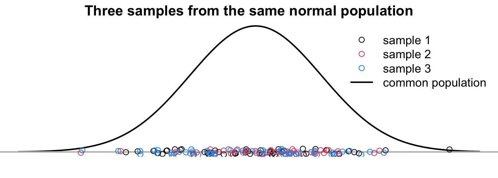
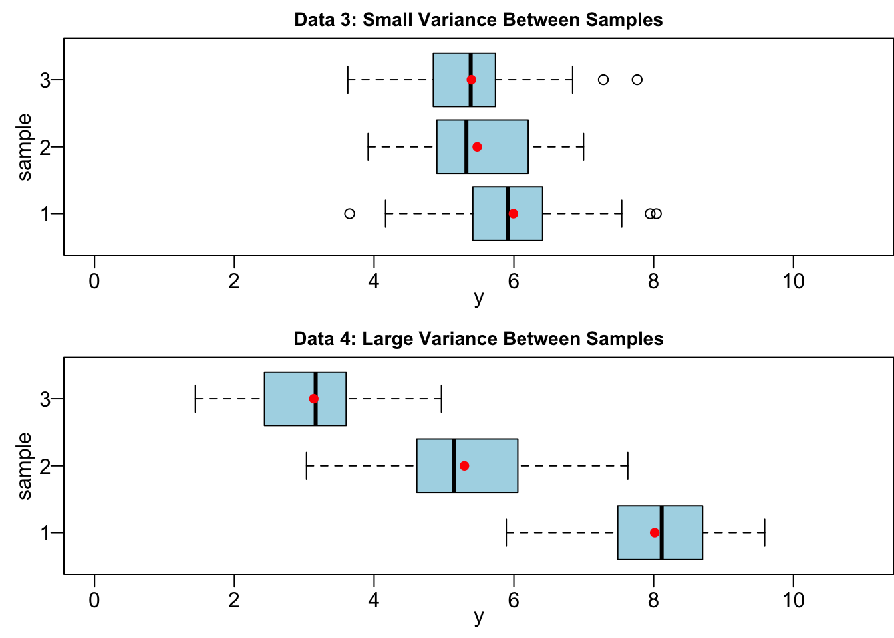
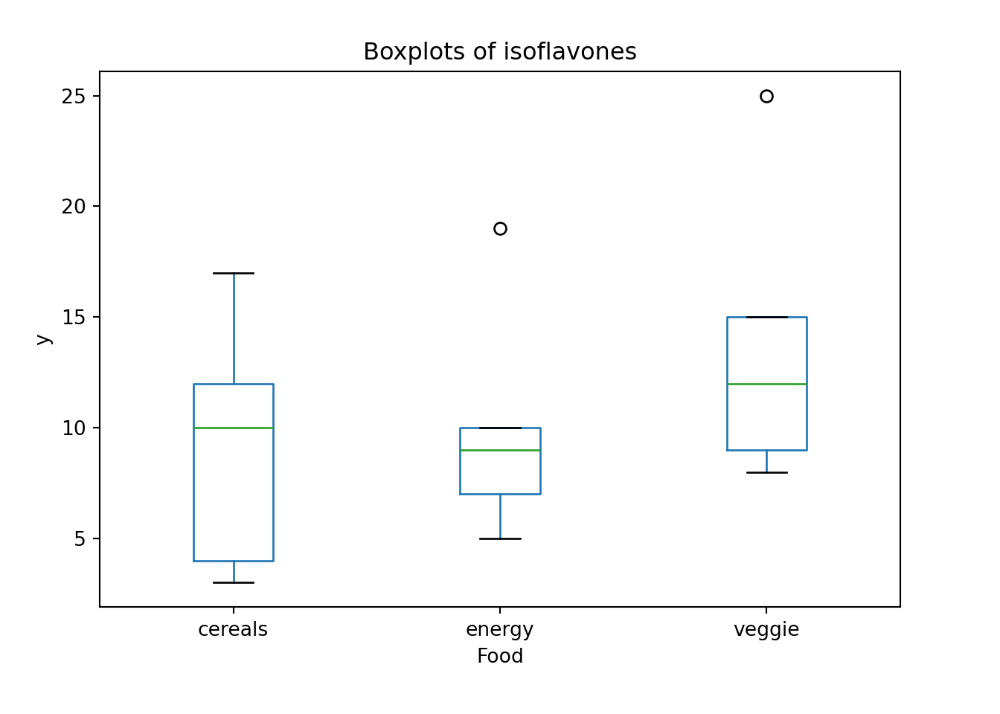

23 Analysis of Variance
Comparing More Than Two Population Means
We have learned how to compare two population means in Chapter 16. However, in many research settings and questions, we want to compare three or more population means. For example,
- Are there differences in the mean readings of 4 types of devices used to determine the pH of soil samples?
- Do different treatments (None, Fertilizer, Irrigation, Fertilizer and Irrigation) affect the mean weights of poplar trees?

In both cases, four means are compared. The two-sample \(z\) or \(t\) test cannot be used anymore. Our solution is the analysis of variance, or ANOVA.
23.1 ANOVA Rationale
One-Way Analysis of Variance
A factor (treatment) is a property or characteristic (categorical variable) that allows us to distinguish the different populations from one another. In fact, when we compare two population means, the two samples are from the populations separated by the categories of a factor. For example, we have gender as a factor that separates the human population into male and female populations, then we compare their mean salary. In our previous examples, type of device and treatment of trees are factors.
One-way ANOVA examines the effect of single categorical variable on the mean of a numerical variable. The ANOVA model is one-way because there is only one factor being considered. If two factors are examined to see how they affect the mean of a numerical variable, the model is called two-way ANOVA. The numerical variable in ANOVA or regression model (Chapter 26) is called the response variable because we want to see how the variable responses to the changes of factors or other variables.
Interestingly, we analyze variances to test the equality of three or more population means 🤔. It sounds counterintuitive, but later you will see why this makes sense.
Requirements
The one-way ANONA model has the following requirements or assumptions.
Each sub-population formed by the category of the factor is normally distributed. In the two-sample \(z\) or \(t\) test, we also have such assumption that the two samples are drawn independently from two normally distributed populations or at least both sample sizes are sufficiently large.
The populations have the same variance \(\sigma^2\). ANOVA does not ridiculously assume all the population variances are known. Instead, the model admits the variances are unknown, but assumes they are all equal. Also sounds ridiculous? Anyway, it is what it is, and this is one of the limitations of ANOVA, although equality of variances is a pretty loose requirement. It is also possible to transform our data, so that the transformed samples have similar magnitude of variance. Does this assumption remind you of something? The two-sample pooled \(t\)-test has the equality of variance assumption too. In this point of view, one-way ANOVA is a generalization of the two-sample pooled \(t\)-test. The next two requirements will be not surprising at all because they are also requirements of the two-sample pooled \(t\)-test.
The samples are random samples. Without mentioned explicitly, the inference methods and statistical models introduced in the book are based on random samples.
The samples are independent of each other. They are not matched or paired in any way.
Data and Math Notation for ANOVA

\(y_{ij}\): \(j\)-th observation from population \(i\). \(\color{blue}{(y_{24}:\text{ 4-th observation from population 2})}\)
\(n_i\): number of values in the \(i\)-th group/sample. (\(i = 1, \dots, k = 5\)) \(\color{blue}{\small (n_1 = n_2 = \dots = n_5 = 4)}\)
\(\bar{y}_{i\cdot}\): the average of values in the \(i\)-th sample, \(\bar{y}_{i\cdot} = \frac{\sum_{j=1}^{n_i}y_{ij}}{n_i}.\)
\(N\): total number of values in all samples combined, \(\small N = n_1 + \dots + n_k = \sum_{i=1}^kn_i\). \(\color{blue}{\small (N = 4 + \dots + 4 = 20)}\)
\(\bar{y}_{\cdot\cdot}\): the grand sample mean that is the average of all sample values combined, \(\bar{y}_{\cdot\cdot} = \frac{\sum_{i=1}^{k}\sum_{j=1}^{n_i}y_{ij}}{N} = \frac{\sum_{i=1}^{k}n_i\bar{y}_{i\cdot}}{n_1 + \dots + n_t}\)
Mathematically, suppose there are \(k\) populations/samples, and for group \(i =1, \dots, k\), \(n\) observations are drawn. Then
\[y_{ij} \stackrel{iid}{\sim} N(\mu_i, \sigma^2), ~~ j = 1, 2, \dots, n.\]
Our goal is to test whether or not \(\mu_1 = \mu_2 = \cdots = \mu_k.\) If we do not reject \(H_0: \mu_1 = \mu_2 = \cdots = \mu_k,\) then all samples are viewed as samples from a common normal distribution, i.e., \(N(\mu_i, \sigma^2)\) and \(\mu = \mu_1 = \mu_2 = \cdots = \mu_k\).
\[y_{ij} \stackrel{iid}{\sim} N(\mu, \sigma^2), ~~ j = 1, 2, \dots, n.\]
Rationale
The section is quite important because we discuss in detail why we use variance size to test whether or not population means are equal.
Suppose we have two data sets Data 1 and Data 2, and both have three groups to be compared. Interestingly, Data 1 and Data 2 have the same group sample means \(\bar{y}_1\), \(\bar{y}_2\) and \(\bar{y}_3\) denoted as red dots in Figure 23.1. However, they differ with regards to the variance within each group. Data 1 has small variance within samples, while Data 2 has large variance within samples. Within groups, the data points in Data 1 are quite tight and close each other, and therefore they are all close to their sample mean. On the contrary, the data points in Data 2 are quite distant each other, even they are in the same group. Such distribution pattern tells us that the populations from which the samples of Data 1 are drawn have small variance \(\sigma^2\).
Before we go into more details, let’s see if you have a great intuition.

If your answer is Data 1, congratulations you are correct!
The difference in sample means in Data 1 is more likely due to the true difference in population means (\(\mu_1, \mu_2, \mu_3\) not all the same). Because of the small variation within groups, in Data 1 a value drawn from group 1 is very unlikely to be drawn from another group because with the normality assumption, the chance to be drawn from another group is very tiny. Figure 23.2 clearly illustrates this idea. The samples of Data 1 are so well-separated that we are more confident to say they are drawn from three well-separated populations that are not overlapped each other, and have distinct population means \(\mu_1, \mu_2\), and \(\mu_3\).
If the variance within groups is large, as shown at the bottom of Figure 23.2, all three samples are mixed up together, as if they are all from the common population, even though they are in fact are from three distinct populations \(N(\mu_1, \sigma^2), N(\mu_2, \sigma^2), N(\mu_3, \sigma^2)\) and \(\mu_1 \ne \mu_2 \ne \mu_3\). Note that the three populations still have their own distinct population mean which is actually identical to the mean with small variance, but it is hard for us to learn this fact from their mixed random samples. Because the three samples are indistinguishable, we don’t have strong evidence to conclude that their corresponding population has its own population mean, and tend to conclude that the three samples are from a common population \(N(\mu, \sigma^2)\).

The three samples in Figure 23.3 are from a common population \(N(\mu, \sigma^2)\). The samples look pretty similar to the samples with large variance in Figure 23.2. In other words, either one common population or three populations with large variance can produce quite similar samples. With the samples only, we cannot tell which data generating mechanism is the true one generating such data.

Note
Always keep in mind that all we have are samples, and we never know the true means \(\mu_1\), \(\mu_2\), and \(\mu_3\). In the figures, we assume we know the true populations, and see what the samples look like. Statistical inference is trickier. We want to have a decision rule, so that we know how much the samples are well separated is enough to say they are from three different populations.
Variation Between Samples & Variation Within Samples
There are two types of variation we need to consider in order to determine whether population means are identical. They are variation between samples and variation within samples.
We have discussed the variation within samples or variance within groups, which measures the variability of data points in each group. This is actually the sample point estimate of the population variance \(\sigma^2\) because the data points in the \(i\)-th group are assumed from the \(i\)-th population \(N(\mu_i, \sigma^2).\) There are \(k\) sample variance, one for each group. Later, we will learn how to combine them to get one single variance within samples as an estimate of \(\sigma^2\).
Variation between samples, on the other hand, measures variability of sample means. The farther away from each other the sample means are, the larger variation between samples. In our Data 1 and Data 2 example, their variation between samples are very close because the relative location of their sample means are basically the same. Figure 23.4 illustrating the variance between samples. Data 3 and 4 have the same variance within samples, but Data 3 have small variation between samples and Data 4 have large variation between samples. Clearly, the sample means in Data 4 are farther away from each other, comparing to Data 3.

Let me ask you the same question for Data 3 and 4.
Your answer should be Data 4. When the sample means \(\bar{y}_1\), \(\bar{y}_2\) and \(\bar{y}_3\) are far away from each other, and they serve as the unbiased point estimate of \(\mu_1\), \(\mu_2\) and \(\mu_3\), respectively, we tend to claim that \(\mu_1\), \(\mu_2\) and \(\mu_3\) are not identical.
We have an important finding. Whether or not there is a difference in population means depends on the relative size of variation between samples and variation within samples. When variability between samples is large in comparison to the variation within samples, like Data 1 and Data 4, we tend to conclude that the population means are not all the same. When variation between samples is small relatively to the variation within samples, like Data 2 and Data 3, it’s hard to exclude the possibility that all samples comes from the same population.
23.2 ANOVA Procedures
ANOVA is usually done by providing the ANOVA table below.
In this section, we are going to learn the meaning of every cell in the table, and how to use the table to do the testing of equality of population means.
The hypotheses is \[\begin{align} &H_0: \mu_1 = \mu_2 = \cdots = \mu_k\\ &H_1: \text{Population means are not all equal} \end{align}\]
Note that the alternative hypothesis is not \(H_1: \mu_1 \ne \mu_2 \ne \cdots \ne \mu_k\). This is just one scenario where \(H_0\) is not satisfied. Any \(\mu_i \ne \mu_j , i \ne j\) violates \(H_0\), and should be a possibility of \(H_1\).
We learned that whether or not there is a difference in population means depends on the relative size of variation between samples and variation within samples. Statistician Ronald Fisher found a way to define a variable which is the ratio of variance between samples to variance within samples, and the variable follows the \(F\) distribution: \[\frac{\text{variance between samples}}{\text{variance within samples}} \sim F_{df_B,\, df_W}\] The degrees of freedom \(df_B\) is paired with variance between samples and \(df_W\) is for variance within samples. Be careful the order matters.
ANONA uses F test. If the variance between samples is much larger than the variance within samples, then the \(F\) test statistic \(F_{test}\) will be much greater than 1, which may be over the \(F\) critical value, and \(H_0\) is rejected.
The key question is how variance between samples and variance within samples are defined so that the ratio is \(F\) distributed.
Variance Within Samples
One-way ANOVA is a generalization of the two-sample pooled \(t\)-test. In the two-sample pooled \(t\)-test with equal variance \(\sigma^2\), we have the pooled sample variance \[s_p^2 = \frac{(n_1-1)s_1^2 + (n_2-1)s_2^2}{n_1 + n_2 - 2}\]
How about the pooled sample variance for \(k\) samples? ANOVA assumes the populations have the same variance such that \(\sigma_1^2 = \sigma_2^2 = \cdots = \sigma_k^2 = \sigma^2\). With the same logic, we can have the pooled sample variance from \(k\) samples \[\boxed{s_W^2 = \frac{(n_1-1)s_1^2 + (n_2-1)s_2^2 + \cdots + (n_k-1)s_k^2}{n_1 + n_2 + \cdots + n_k - k}}\] where \(s_i^2\), \(i = 1, \dots ,k\), is the sample variance of \(i\)-th group. \(s_W^2\) represents a combined estimate of the common variance \(\sigma^2\). It measures variability of the observations within the \(k\) populations. Note that each \(s_i^2\) measures the variability within the \(i\)-th sample. So this pooled estimate is the variance within samples.

Variance Between Samples
The variance between samples measures variability among sample means for the \(k\) groups, which is defined as \[\boxed{s^2_{B} = \frac{\sum_{i=1}^k n_i (\bar{y}_{i\cdot} - \bar{y}_{\cdot\cdot})^2}{k-1}}\] where
- \(\bar{y}_{i\cdot}\) is the \(i\)-th sample mean.
- \(\bar{y}_{\cdot\cdot}\) is the grand sample mean with all data points in all groups combined.
- \(n_i\) is the sample size of the \(i\)-th sample.
The variance between samples measures the magnitude of how large is the deviation from group means to the overall grand mean. When \(\bar{y}_{i\cdot}\)s are away from each other, \((\bar{y}_{i\cdot} - \bar{y}_{\cdot\cdot})^2\) will be large, so is \(s^2_{B}\).

In fact, not only \(s^2_{W}\) estimates \(\sigma^2\), \(s^2_{B}\) is also an estimate of \(\sigma^2\). If \(H_0\) is true \((\mu_1 = \cdots = \mu_k = \mu)\), any variation in the sample means is due to chance and randomness, so it shouldn’t be too large. \(\bar{y}_{1\cdot}, \cdots, \bar{y}_{k\cdot}\) should be close each other and should be close to \(\bar{y}_{\cdot \cdot}\). This leads to a small \(s^2_{B}\) and small ratio \(s^2_{B}/s^2_{W}\) that is our \(F\) test statistic. That’s why when \(\mu_1 = \cdots = \mu_k = \mu\), we have small \(F\) test statistic and tend to not reject \(H_0\).
ANOVA Table: Sum of Squares
In the ANOVA table, there is a column Sum of Squares. There are three types of sum of squares. Let’s learn what they are.
Total Sum of Squares (SST) measures the total variation around \(\bar{y}_{\cdot\cdot}\) in all of the sample data combined (ignoring the groups), which is defined as: \[\color{blue}{SST = \sum_{j=1}^{n_i}\sum_{i=1}^{k} \left(y_{ij} - \bar{y}_{\cdot\cdot}\right)^2}\] where \(y_{ij}\) is the \(j\)-th data point in the \(i\)-th group.
Sum of Squares Between Samples (SSB) measures the variation between sample means: \[\color{blue}{SSB = \sum_{i=1}^{k}n_i \left(\bar{y}_{i\cdot} - \bar{y}_{\cdot\cdot}\right)^2}\]
Sum of Squares Within Samples (SSW) measures the variation of any value, \(y_{ij}\), about its sample mean, \(\bar{y}_{i\cdot}\): \[\color{blue}{SSW = \sum_{i=1}^{k} \sum_{j=1}^{n_i} \left(y_{ij} - \bar{y}_{i\cdot}\right)^2 = \sum_{i=1}^{k} (n_i - 1)s_i^2}\]
Sum of Squares Identity
The three sum of squares are related by the identity \[SST = SSB + SSW.\]
Intuitively, for data points \(y_{ij}\), their squared distance from the grand sample mean \(\bar{y}_{\cdot\cdot}\) can be decomposed into two parts: (1) the squared distance between their own group sample mean and the grand sample mean, and (2) the their squared distance from their own group sample mean.
Note that the sum of squares statistics have associated degrees of freedom. More interestingly, the three degrees of freedom also form an identity. So
\[df_{T} = df_{B} + df_{W}\] where
- \(df_{T} = N-1\) is the degrees of freedom of \(SST\)
- \(df_{B} = k - 1\) is the degrees of freedom of \(SSB\)
- \(df_{W} = N - k\) is the degrees of freedom of \(SSW\).
When a sum of squares divided by its degrees of freedom, we get its mean square (MS), i.e., \[\text{mean square} = \dfrac{\text{sum of squares}}{\text{degrees of freedom}}.\] We are particularly interested in the mean square between (MSB) and mean square within (MSW):
- \(MSB = \frac{SSB}{k-1} = s^2_{B}\)
- \(MSW = \frac{SSW}{N-k} = s^2_{W}\)
Please check the formula of \(SSB\) and \(SSW\). You will find that \(MSB\) is our variance between samples and \(MSW\) is our variance within samples! So our \(F\) test statistic is \[F_{test} = \frac{MSB}{MSW}.\]
Under \(H_0\), \(s^2_{B}/s_W^2\) is a statistic from \(F_{k-1, \, N-k}\) distribution. The first degrees of freedom is \(df_{B} = k - 1\), and the second is \(df_{W} = N - k\). They cannot be switched.
We reject \(H_0\) in favor of \(H_1\) if \(F_{test} > F_{\alpha, \, k - 1,\, N-k}\), or \(p\)-value \(P(F_{k - 1,\, N-k} > F_{test}) < \alpha\) for some significance level \(\alpha\).
ANOVA Table
We are done! We’ve talked about every cell in the ANOVA table, and we can use the table to do the test and make a conclusion about the equality of population means.
23.3 ANOVA Example
We hypothesize that a nutrient called “isoflavones†varies among three types of food: (1) cereals and snacks, (2) energy bars and (3) veggie burgers.


A sample of 5 is taken from each type of food and the amount of isoflavones is measured. Is there a sufficient evidence to conclude that the mean isoflavone levels vary among these food items at \(\alpha = 0.05\)?
We are going to learn to generate a ANOVA table using R.
Data
In order to use the R built-in function for ANOVA, we get to make sure the data matrix is in the right format. The original data set we get may be something like object data below, where each column represents the five isoflavones measurements of a food type. It is not a “wrong†data format, but just not what we need for doing ANOVA. The data frame data_anova is the data format needed for ANOVA. There are two columns, our response variable isoflavones measurement labelled y, and the factor or categorical variable that may affect the response value, which is food type labelled food. With this format, there will be totally \(N=15\) observations and rows. Please transform any data into this kind of data format before you do ANOVA.
data 1 2 3
1 3 19 25
2 17 10 15
3 12 9 12
4 10 7 9
5 4 5 8data_anova y food
1 3 cereals
2 17 cereals
3 12 cereals
4 10 cereals
5 4 cereals
6 19 energy
7 10 energy
8 9 energy
9 7 energy
10 5 energy
11 25 veggie
12 15 veggie
13 12 veggie
14 9 veggie
15 8 veggieThe boxplot kind of gives us the isoflavones distribution by food type. It is hard to say whether the food type affects isoflavone level or not, and we need ANOVA to help us make the conclusion.

Test Assumptions
Before implementing any statistical method, always check its method assumptions.
ANOVA requires
- \(\sigma_1 = \sigma_2 = \sigma_3\)
- Data are generated from a normal distribution for each type of food.
Well we did not learn to test the equality of more than two population variances, but believe me I did the test, and the three variances are not significantly different from each other. 1 Even the the variances are not all equal, the ANOVA performance will not be worse much. Equality of variances is not a strict requirement. George Box of UW-Madison showed that as long as the sample sizes are (nearly) equal, the largest variance can be up to 9 times the smallest one and the result of ANOVA will continue to be reliable. A general rule of thumb for equal variances is to compare the smallest and largest sample standard deviations. This is much like the rule of thumb for equal variances for the test for independent means. If the ratio of these two sample standard deviations falls within 0.5 to 2, then it may be that the assumption is not violated.
To check the normality, we can check their QQ plots. 2 Figure 23.6 shows that there is no obvious non-normal pattern although two data points are outside the blue 95% confidence region. The normality is not very restrictive as well. As long as the distribution is not very skewed, ANOVA works pretty well.
We say the ANOVA \(F\) test is robust to the violation of the two assumptions.
ANOVA Testing
We are interested in the following test:
\(\begin{align}&H_0: \mu_1 = \mu_2 = \mu_3\\&H_1: \mu_is \text{ not all equal} \end{align}\)
where \(\mu_1\), \(\mu_2\), \(\mu_3\) stand for the population mean level of isoflavones of food cereals and snacks, energy bars, and veggie burgers respectively.
We could follow the regular six-step testing procedure, but generating the ANOVA table is more straightforward.
In R, we can do all the calculations and generate an ANOVA table using just one line of code. We first use the popular function lm() to implement ANOVA. The first argument is formula that has the form response ~ factor where response is the numeric response vector, and factor is the categorical factor vector. In our data data_anova, y is our response, and food is our factor. Note that if we just write y and food in the formula, R will render an error because R does not recognize y and food because they are not an R object but a column name of data data_anova. Therefore, we need to tell R where y and food are from by specifying the data set they are referred. If you want to specify the data name, you can get access to the response and factor vector by extracting them using data_anova$y and data_anova$food.
The word lm stands for linear model, and ANOVA is a linear model. If you just run lm(formula = data_anova$y ~ data_anova$food), it will show the linear model output related to ANOVA. We don’t need it at this moment, and we will discuss more about linear model in Regression Chapter 26.
To obtain the ANOVA table, we apply the function anova() to the lm object. In the output, food is the source of variation between samples. Residuals is for the source of variation within samples. F value is the \(F\) test statistic value, not the critical value. Pr(>F) is the \(p\)-value. Since \(p\)-value > 0.05, we do not reject \(H_0\). The evidence is not sufficient to reject the equality of population means.
Analysis of Variance Table
Response: y
Df Sum Sq Mean Sq F value Pr(>F)
food 2 60.4 30.200 0.8282 0.4603
Residuals 12 437.6 36.467 Analysis of Variance Table
Response: data_anova$y
Df Sum Sq Mean Sq F value Pr(>F)
data_anova$food 2 60.4 30.200 0.8282 0.4603
Residuals 12 437.6 36.467 23.4 Unequal Variances
The assumption of normality and equality of variances are both loose requirements. George Box of UW-Madison showed that as long as the sample sizes are (nearly) equal, the largest variance can be up to 9 times the smallest one and the result of ANOVA will continue to be reliable.
If population variances differ by large amount, we can transform the data. If the original variable is \(y\), and the variances associated with \(y\) across the treatments are not equal (heterogeneous), it may be necessary to work with a new variable such \(\sqrt{y}\), \(\log y\), or some other transformed variable.
If \(\sigma^2 \propto \mu\), use \(Y_T = \sqrt{Y}\) or \(\sqrt{Y+0.375}\).
If \(\sigma^2 \propto \mu^2\), use \(Y_T = \log{(Y)}\) or \(\log(Y+1)\).
The following example demonstrates how data transformation can significantly equalize variances across groups. In the original data \(y\), variance increases with the treatment type, which violates the assumption of homogeneity of variance necessary for performing ANOVA. Directly applying ANOVA to \(y\) may result in unconvincing outcomes. However, by transforming the data from \(y\) to \(\sqrt{y}\), the variances across the three groups become much more similar, thereby satisfying the homogeneity of variance assumption and making the ANOVA results more reliable.


23.4.1 Example of Unequal Variances (Example 8.4 SMD)
Biologists believe that Mississippi river causes the oxygen level to be depleted near the Gulf of Mexico. To test this hypothesis water samples are taken at different distances from the mouth of Mississippi river, and the amounts of dissolve oxygen (in ppm) are recorded.
The origin data set data_oxygen is saved as
1KM 5KM 10KM 20KM
1 1 4 20 37
2 5 8 26 30
3 2 2 24 26
4 1 3 11 24
5 2 8 28 41
6 2 5 20 25
7 4 6 19 36
8 3 4 19 31
9 0 3 21 31
10 2 3 24 33First we learn that the homogeneity of variance assumption is violated by checking the boxplot.
boxplot(data_oxygen)This is also verified by the Levene’s test using the function car::leveneTest(). The Levene’s test \(p\)-value is 0.02, so we reject the \(H_0\): Equality of variance.
library(car)
leveneTest(oxygen ~ km, data = data_oxygen_tidy)Warning in leveneTest.default(y = y, group = group, ...): group coerced to
factor.Levene's Test for Homogeneity of Variance (center = median)
Df F value Pr(>F)
group 3 3.7003 0.02029 *
36
---
Signif. codes: 0 '***' 0.001 '**' 0.01 '*' 0.05 '.' 0.1 ' ' 1Note that here we use the data data_oxygen_tidy. As mentioned before, when doing analysis or fitting a statistical model, we prefer this tidy data that each column represents a variable, and each row stands for one observed value.
oxygen km
1 1 1
2 5 1
3 2 1
4 1 1
5 2 1
6 2 1
7 4 1
8 3 1
9 0 1
10 2 1
11 4 5
12 8 5
13 2 5
14 3 5
15 8 5
16 5 5
17 6 5
18 4 5
19 3 5
20 3 5
21 20 10
22 26 10
23 24 10
24 11 10
25 28 10
26 20 10
27 19 10
28 19 10
29 21 10
30 24 10
31 37 20
32 30 20
33 26 20
34 24 20
35 41 20
36 25 20
37 36 20
38 31 20
39 31 20
40 33 20To get some understanding of how we should transform our data to make the variances equal, let’s calculate \(\frac{s_i^2}{\bar{y}_i}\) for \(i = 1, 2, 3, 4\).
- \(\frac{s_1^2}{\bar{y}_1} = 0.99\), \(\frac{s_2^2}{\bar{y}_2} = 0.97\), \(\frac{s_3^2}{\bar{y}_3} = 1.06\), \(\frac{s_4^2}{\bar{y}_4} = 0.97\)
This tells us, nearly, the sample variance is proportional to the sample mean of the same group. So we can use the transformation \(Y_T = \sqrt{Y+0.375}\).
Now, the variances for each group of the transformed data are much reasonably close.
23.5 ANOVA Mathematical Model*
To generalize the ANOVA, it is easier to think of one-factor ANOVA in the following way: \[y_{ij} = \mu + \tau_i + \epsilon_{ij}, \quad j = 1, 2, \dots, n_i, \quad i = 1, 2, \dots, t\]
- \(\mu\) is the overall mean across all \(t\) populations.
- \(\tau_i\) is the effect due to \(i\)-th treatment.
- \(\epsilon_{ij}\) is the random deviation of \(y_{ij}\) about the \(i\)-th population mean \(\mu_i = \mu+ \tau_i\).
- \(\mu\) and \(\tau_i\) are unknown constants.
- ANOVA is a linear model.
The assumptions of ANOVA are
- \(\epsilon_{ij}\)s are independent and normally distributed with mean 0.
- \(Var(\epsilon_{ij}) = \sigma^2\) ( a constant value )
- \(\epsilon_{ij} \sim N(0, \sigma^2)\)
Figure 23.7 illustrate the ANOVA model structure. There are 4 treatments, and the overall mean \(\mu = 75.5\). The 4 treatments are \(\tau_1 = -5.5\), \(\tau_2 = -17.5\), \(\tau_3= -14.5\), and \(\tau_4 = 8.5\).
Let \(y_{13}\) is the third measurement drawn from population 1, the its value can be decomposed into three parts: the overall mean, the adjustment due to being in the first treatment, and the random variation of the first population: \[y_{13} = \mu + \tau_1 + \epsilon_{13}.\]
If \(y_{13} = 72\), then \[y_{13} = \mu + \tau_1 + \epsilon_{13} \iff 72 = 75.5 + (-5.5) + 2.\]
Again, our model is \(y_{ij} = \mu + \tau_i + \epsilon_{ij} = \mu_i + \epsilon_{ij}, \quad j = 1, 2, \dots, n_i, \quad i = 1, 2, \dots, t.\)
To test whether all samples come from the same population, we test whether all group means are equal:
\(\begin{align} &H_0: \mu_1 = \mu_2 = \cdots = \mu_t\\ &H_1: \text{Population means are not all equal} \end{align}\)
This is equivalent to testing whether all treatment effects are zero, or there is no treatment/factor/group effect:
\(\begin{align} &H_0: \tau_i = 0 \text{ for all } i = 1, 2, \dots, t\\ &H_1: \tau_i \ne 0 \text{ for some } i \end{align}\)
Test statistics and decision rule are same as before. \(s^2_{B} = MSB = \frac{SSB}{df_B}\) and \(s^2_{W} = MSW = \frac{SSW}{df_W}\). Then the test statistic is \(F_{test} = \frac{s^2_{B}}{s_W^2}\). We reject \(H_0\) if \(F_{test} > F_{\alpha, \, df_{B},\, df_{W}}\) or the \(p\)-value \(P(F > F_{test}) < \alpha\).
23.5.1 Check Assumption that \(\epsilon_{ij} \sim N(0, \sigma^2)\)
We learn that \(y_{ij} = \mu + \tau_i + \epsilon_{ij} = \mu_i + \epsilon_{ij}\) where \(\mu_i = \mu + \tau_i\). As before, we need to check model assumptions. One assumption is \(\epsilon_{ij} \sim N(0, \sigma^2)\). Notice that it implies normality and homogeneity of variance assumptions.
For the model, we have \(\epsilon_{ij} = y_{ij} - \mu_i\). However, \(\mu_i\) is unknown. We are not able to get the values of \(\epsilon_{ij}\) and check whether they are normally distributed. One solution is to find its estimate. We first estimate the errors \(\epsilon_{ij}\) by \(e_{ij}\) called residuals: \[e_{ij} = y_{ij} - \hat{\mu}_i = y_{ij} - \bar{y}_{i\cdot},\] where \(\hat{\mu}_i = \bar{y}_{i\cdot}\). We use a hat symbol \(\hat{}\) to denote the estimated value for an unknown parameter, or the predicted value of the response. Here we don’t know the group population means \(\mu_i\), but they can be estimated by their corresponding group sample means \(\bar{y}_{i\cdot}\).
To test normal distribution of errors \(\epsilon_{ij}\), we look at the normal probability plot of \(e_{ij}\).
-
To test that the \(Var(\epsilon_{ij})\) is constant of \(\sigma^2\), we look at the scatter plot of the residuals \(e_{ij}\) and the predicted or fitted values \(\hat{y}_{ij}\), where \[\hat{y}_{ij} = \hat{\mu}_i = \bar{y}_{i\cdot}.\] \(\hat{y}_{ij}\) is the fitted value of the \(j\)th observation in the \(i\)th group, which is an estimate of the observed data point \(y_{ij}\). The fitted value \(\hat{y}_{ij}\) is the one produced from the model, and of course for the most of the time will not be the same as the observed value \(y_{ij}\). From ANOVA, \(\hat{y}_{ij} = \bar{y}_{i\cdot}\). That is, if we want to estimate any value drawn from the \(i\)th population, ANOVA gives us a point estimate, the \(i\)th group sample mean, to estimate any \(j\)th observation from the \(i\)th population.
The samples in the \(i\)th population are not the same due to the variation of the normal distribution. However, when estimating each individual observation, ANOVA would not provide different values for different observations, but one single common value for all individual observations. The sampling variation cannot be captured by ANOVA, and using the mean value \(\bar{y}_{i\cdot}\) as an estimate is the best ANOVA can do.
Let’s go back to the oxygen level example. The original data look like
To get the sample mean for each group, we can grab each column data, and calculate its average. For example, \(\bar{y}_{1\cdot} = 2.2\).
colMeans(data_oxygen) 1KM 5KM 10KM 20KM
2.2 4.6 21.2 31.4 The fitted value can also be obtained from the fitted result by the fitted linear model from lm(). oxygen_fit$fitted.values gives us fitted values for all observations. Note that the first 10 observations all have the same fitted value 2.2 because they are all from the first group (1 km). Similarly for other groups.
# data_oxygen_tidy
## fit a linear model to get fitted values and residuals
oxygen_fit <- lm(oxygen ~ km, data = data_oxygen_tidy)
oxygen_fit$fitted.values 1 2 3 4 5 6 7 8 9 10 11 12 13 14 15 16
2.2 2.2 2.2 2.2 2.2 2.2 2.2 2.2 2.2 2.2 4.6 4.6 4.6 4.6 4.6 4.6
17 18 19 20 21 22 23 24 25 26 27 28 29 30 31 32
4.6 4.6 4.6 4.6 21.2 21.2 21.2 21.2 21.2 21.2 21.2 21.2 21.2 21.2 31.4 31.4
33 34 35 36 37 38 39 40
31.4 31.4 31.4 31.4 31.4 31.4 31.4 31.4 We can organize the fitted values, saving them as a data frame like the original data data_oxygen.
fitted_val <- matrix(oxygen_fit$fitted.values, 10, 4)
## use the same column name as the original data
colnames(fitted_val) <- paste0(c(1, 5, 10, 20), "KM")
## fitted value data
as.data.frame(fitted_val) 1KM 5KM 10KM 20KM
1 2.2 4.6 21.2 31.4
2 2.2 4.6 21.2 31.4
3 2.2 4.6 21.2 31.4
4 2.2 4.6 21.2 31.4
5 2.2 4.6 21.2 31.4
6 2.2 4.6 21.2 31.4
7 2.2 4.6 21.2 31.4
8 2.2 4.6 21.2 31.4
9 2.2 4.6 21.2 31.4
10 2.2 4.6 21.2 31.4Now let’s check the residuals \(e_{ij} = y_{ij} - \bar{y}_{i\cdot}\). We can obtain the residuals using its definition
data_oxygen_tidy[, 1] - oxygen_fit$fitted.values 1 2 3 4 5 6 7 8 9 10 11 12 13
-1.2 2.8 -0.2 -1.2 -0.2 -0.2 1.8 0.8 -2.2 -0.2 -0.6 3.4 -2.6
14 15 16 17 18 19 20 21 22 23 24 25 26
-1.6 3.4 0.4 1.4 -0.6 -1.6 -1.6 -1.2 4.8 2.8 -10.2 6.8 -1.2
27 28 29 30 31 32 33 34 35 36 37 38 39
-2.2 -2.2 -0.2 2.8 5.6 -1.4 -5.4 -7.4 9.6 -6.4 4.6 -0.4 -0.4
40
1.6 or we can simply grab them from the fitted result:
oxygen_fit$residuals 1 2 3 4 5 6 7 8 9 10 11 12 13
-1.2 2.8 -0.2 -1.2 -0.2 -0.2 1.8 0.8 -2.2 -0.2 -0.6 3.4 -2.6
14 15 16 17 18 19 20 21 22 23 24 25 26
-1.6 3.4 0.4 1.4 -0.6 -1.6 -1.6 -1.2 4.8 2.8 -10.2 6.8 -1.2
27 28 29 30 31 32 33 34 35 36 37 38 39
-2.2 -2.2 -0.2 2.8 5.6 -1.4 -5.4 -7.4 9.6 -6.4 4.6 -0.4 -0.4
40
1.6 The residuals must look like a normal distribution. The normal probability plot is somewhat close to a straight line.

The Shapiro test and Anderson-Darling test give us a different conclusion. We could either transform the data to make it look more normal, or collect more data points to gain more information about how the data are distributed.
Shapiro-Wilk normality test
data: oxygen_fit$residuals
W = 0.95469, p-value = 0.1101
Anderson-Darling normality test
data: oxygen_fit$residuals
A = 0.87454, p-value = 0.02271Residual plots is another good way to check the model assumptions, especially whether or not the homogeneity of variance is hold. A residual plot is a scatterplot of \(e_{ij}\) (y-axis) versus \(\hat{y}_{ij}\) (x-axis).
plot(x = oxygen_fit$fitted.values, y = oxygen_fit$residuals)If the homogeneity of variance holds, the residual points should be scattered around value 0 with the same degree of spreadness. Due to the cone shape, we see that the residual variance is increasing with the fitted values or kilometers, a sign of non-constant variances. We can conclude that \(Var(\epsilon_{ij})\) is not constant. We can further say that this variance is a function of \(\bar{y}_{i\cdot}\).
Since the model assumptions are violated, we transform our data to correct unequal variances. As we learned in the previous section, we use the transformation \(Y_T = \sqrt{Y + 0.375}\). The transformed data set is called data_oxygen_tidy_trans.
data_oxygen_tidy_trans <- data_oxygen_tidy
data_oxygen_tidy_trans[, 1] <- sqrt(data_oxygen_tidy[, 1] + 0.375)We then fit ANOVA model on the transformed data.
Analysis of Variance Table
Response: oxygen
Df Sum Sq Mean Sq F value Pr(>F)
km 3 113.095 37.698 153.3 < 2.2e-16 ***
Residuals 36 8.853 0.246
---
Signif. codes: 0 '***' 0.001 '**' 0.01 '*' 0.05 '.' 0.1 ' ' 1We can check the model assumptions on the transformed data too to make sure that fitting ANOVA to the data makes sense.
Shapiro-Wilk normality test
data: oxygen_fit_trans$residuals
W = 0.97324, p-value = 0.4529
Anderson-Darling normality test
data: oxygen_fit_trans$residuals
A = 0.33815, p-value = 0.4855From the qqplot and the testing results we can see that the transformed data are more like a normal distribution. There is no significant pattern in the residual plot, showing that unequal variances have been corrected.
This result is more convincing than the one using the original data that violates the ANOVA model assumptions. Although the two models both reject the null hypothesis, the numerical results obtained from the transformed data interpret the relationship between the response and the factors more accurately.
anova(oxygen_fit)Analysis of Variance Table
Response: oxygen
Df Sum Sq Mean Sq F value Pr(>F)
km 3 5793.1 1931.03 129.7 < 2.2e-16 ***
Residuals 36 536.0 14.89
---
Signif. codes: 0 '***' 0.001 '**' 0.01 '*' 0.05 '.' 0.1 ' ' 123.6 Nonparametric Approach: Kruskal-Wallis Test
In ANOVA, the sample from each factor level is from a normal population. What if the distribution is non-normal? One solution is to use the Kruskal-Wallis test, which can be viewed as a generalization of the Wilcoxon rank sum test (Mann-Whitney U test). Suppose we have \(k\) samples from \(k\) populations. We like to test the hypothesis that the \(k\) samples were drawn from populations with the same median:
- \(\begin{align} &H_0: \text{All $k$ populations have the same median}\\ &H_1: \text{Not all the medians are the same} \end{align}\)
The requirements of the Kruskal-Wallis test are
- At least 3 independent samples
- Each sample has at least 5 observations for approximating a \(\chi^2\) distribution. If samples have fewer than 5 observations, the \(\chi^2\) approximation doe snot work well, and another way to find critical values is needed.
There is no requirement that the populations have a normal distribution or any other particular distribution.
The testing details are skipped here, but let’s see how we can perform this test to answer our question when the normality assumption of ANOVA is not satisfied.
Example: airquality data
We use the R built-in data set airquality for illustration. The data collected daily air quality measurements in New York, May to September 1973.
str(airquality)'data.frame': 153 obs. of 6 variables:
$ Ozone : int 41 36 12 18 NA 28 23 19 8 NA ...
$ Solar.R: int 190 118 149 313 NA NA 299 99 19 194 ...
$ Wind : num 7.4 8 12.6 11.5 14.3 14.9 8.6 13.8 20.1 8.6 ...
$ Temp : int 67 72 74 62 56 66 65 59 61 69 ...
$ Month : int 5 5 5 5 5 5 5 5 5 5 ...
$ Day : int 1 2 3 4 5 6 7 8 9 10 ...head(airquality) Ozone Solar.R Wind Temp Month Day
1 41 190 7.4 67 5 1
2 36 118 8.0 72 5 2
3 12 149 12.6 74 5 3
4 18 313 11.5 62 5 4
5 NA NA 14.3 56 5 5
6 28 NA 14.9 66 5 6## remove observations with missing values using complete.cases()
air_data <- airquality[complete.cases(airquality), ] Our goal is to test at .05 significance level if the monthly ozone densities in New York have the same median from May to September 1973.
First let’s check the normality assumption. We can use qqnorm(), but here the function qqPlot() from the car package is used. The blue shaded area shows the 95% confidence interval for straight line that indicates normality. Since there are not many observations in each group May to September, it may be hard to see whether normality is satisfied for every group.
library(car)
par(mgp = c(2.5, 1, 0))
par(mar = c(4, 4, 2, 1))
car::qqPlot(Ozone ~ Month, data = air_data, layout=c(1, 5))What we can do is to use a more formal testing procedure to decide whether are not the normality is satisfied. There are several methods for normality test out there such as Kolmogorov-Smirnov (K-S) test, Shapiro-Wilk’s test, and Anderson-Darling test.
The K-S test can be used to compare a sample against any reference distribution, not just the normal distribution. However, the K-S test is more focused on the central part of the distribution and might miss deviations in the tails. It is generally less powerful for detecting deviations from normality compared to other tests like the Shapiro-Wilk or Anderson-Darling tests.
The Shapiro-Wilk test is specifically designed to assess the normality of a distribution. It is generally more powerful than the K-S and Anderson-Darling tests for detecting departures from normality, especially in small to moderately sized samples. The Anderson-Darling test is a modification of the K-S test and gives more weight to the tails of the distribution.
When we do the normality test, the null hypothesis of these tests is that “sample distribution IS normal”. If the test is significant, the distribution is non-normal.
To perform Shapiro-Wilk test, we use shapiro.test() function in R. Note that May and Semptember are not normal.
Shapiro-Wilk normality test
data: air_data[air_data$Month == 5, 1]
W = 0.71273, p-value = 1.491e-05
Shapiro-Wilk normality test
data: air_data[air_data$Month == 9, 1]
W = 0.78373, p-value = 4.325e-05To perform Anderson-Darling test, we use ad.test() function in the R package nortest.
Anderson-Darling normality test
data: air_data[air_data$Month == 5, 1]
A = 1.7452, p-value = 0.0001286ad.test(air_data[air_data$Month == 9, 1])
Anderson-Darling normality test
data: air_data[air_data$Month == 9, 1]
A = 2.4088, p-value = 2.943e-06For the K-S test, we use ks.test() function. We need to add “pnorm†in the function, so that it knows you are comparing your data with the normal distribution.
Warning in ks.test.default(air_data[air_data$Month == 5, 1], "pnorm"): ties
should not be present for the one-sample Kolmogorov-Smirnov test
Asymptotic one-sample Kolmogorov-Smirnov test
data: air_data[air_data$Month == 5, 1]
D = 0.9583, p-value < 2.2e-16
alternative hypothesis: two-sidedWarning in ks.test.default(air_data[air_data$Month == 9, 1], "pnorm"): ties
should not be present for the one-sample Kolmogorov-Smirnov test
Asymptotic one-sample Kolmogorov-Smirnov test
data: air_data[air_data$Month == 9, 1]
D = 1, p-value < 2.2e-16
alternative hypothesis: two-sidedWe just conform that not all sub-samples are normally distributed, and using the Kruskal-Wallis test could be making more sense. It is super easy to perform the Kruskal-Wallis test. Just one line of code with the formula as lm() in the kruskal.test() function.
kruskal.test(formula = Ozone ~ Month, data = air_data)
Kruskal-Wallis rank sum test
data: Ozone by Month
Kruskal-Wallis chi-squared = 26.309, df = 4, p-value = 2.742e-05It’s an (approximate) \(\chi^2\) test with degrees of freedom \(k-1\). Here, we have \(k=5\) months. Since \(p\)-value is approaching to 0, we reject \(H_0\). We conclude that there is sufficient evidence to reject the claim that the 5 monthly ozone densities in New York have the same median.
The test I use is Brown-Forsythe test. It can be performed using the function
onewaytests::bf.test().↩︎There are several tests for normality, such as Shapiro–Wilk test (
stats::shapiro.test()), Anderson–Darling test (nortest::ad.test()), and Kolmogorov–Smirnov test (stats::ks.test()).↩︎